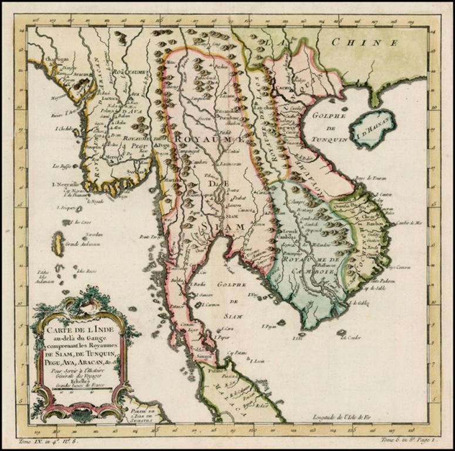
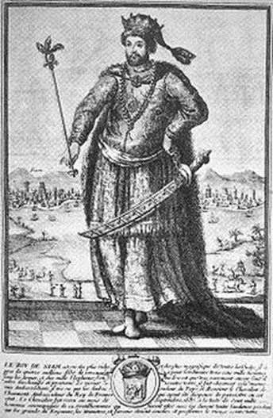
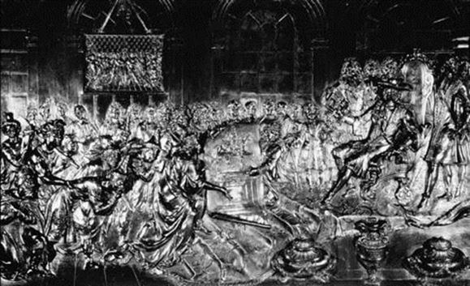
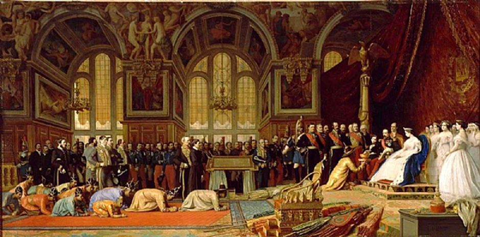
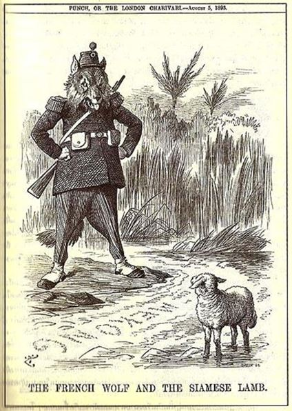
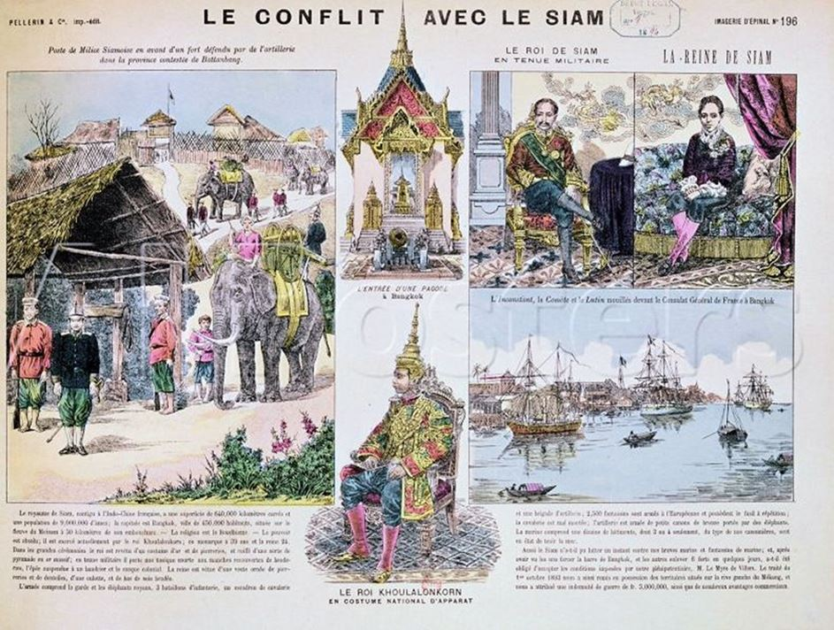
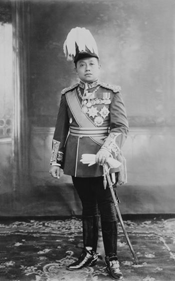
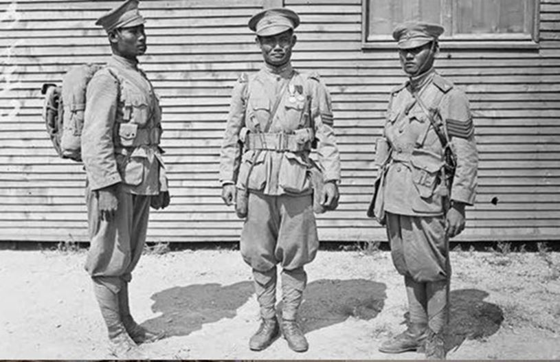
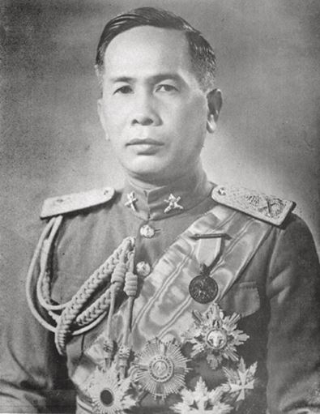

On se souvient, qu’avant de s’appeler Thaïlande, ce pays s’appelait Siam. C’était, bien sûr, avant 1939. Ce que l’on sait moins, c’est que le royaume fut l’un des premiers en Asie du Sud-Est à établir, au XVIIe siècle, des relations d’État à État avec les souverains européens dont Louis XIV. C’est, du reste, à cette période que commence les relations entre la France et le Pays du Sourire, comme nous aimons à le surnommer. Au cours de ces quelques lignes, je vais essayer de vous brosser l’histoire de nos relations avec le Royaume de Siam. Forcément imparfaite, cette relation ne se veut qu’une esquisse documentée.
Le Siam s’étend à cette époque sur un vaste territoire, bien au-delà de la Thaïlande d’aujourd’hui, sur le Cambodge, une partie de la Birmanie et de la Malaisie actuelles. En 1630, sa capitale, Ayutthaya, était une ville dont la population était comprise entre 500.000 et 1 million d’habitants alors que Paris n’en comptait qu’entre 300 et 480.000… Le grand roi Phra Naraï1 (1632-1688) y résidait. Cette ville était, alors, un véritable carrefour d’échanges de produits venus de Chine, du Japon ou d’Occident, du Moyen-Orient, de Malaisie… L'importance du Siam tenait à sa position géographique au seuil de la Chine, avec laquelle les moussons saisonnières empêchaient les liaisons directes. Aussi, les ports d'Ayutthaya servaient d'entrepôts aux marchandises qui transitaient entre l'Europe, l'Inde, les Indes Occidentales, la Chine et le Japon. Le Siam lui-même était un marché intéressant. La paix dont jouissait le pays avait créé un surplus de richesses et permettait aux habitants d'acheter des articles de luxe tels que porcelaine et soieries.
Le Portugal fut le premier à installer des comptoirs. Le vice-roi Afonso de Albuquerque2 envoie une ambassade au Siam en 1511 et Duarte de Coelho Pereira3 établit une ambassade à Ayutthaya (1516) avec signature d’un traité d’amitié et de commerce entre les Portugais et les Rois de Siam4.
D’autres Européens s’aventurèrent au Siam, comme l’Anglais Ralph Fitch5 (1586) ou le Brugeois Jacques de Coutre (1595). Il semblerait, même, que les Espagnols aient signé, en 1598, un traité de commerce entre le Siam et l’Espagne6, accordant aux Espagnols des privilèges fiscaux consécutifs à des échanges commerciaux antérieurs entre les Philippines et le Siam avant même l’arrivée des Espagnols.
En 1601, les vaisseaux hollandais Amsterdam et Goudda, qui font partie des 65 navires envoyés vers l’Asie par les Provinces-Unies, mouillent à Pattani dans le Golfe de Siam. Dans les années qui suivirent les premiers représentants de la puissante VOC (Verenigde Oost-Indische Compagnie, Compagnie hollandaise des Indes Orientales)7 arrivent à Ayutthaya. Ils pourront y ouvrir un comptoir en 1608. Cette année-là, la première ambassade siamoise en Europe 8 part de Bantam pour la Hollande et en revient en 1610.
L’English India Company (EIC, Compagnie des Indes Orientales) ouvre également des comptoirs, d’abord à Pattani, puis à Ayutthaya en 1612, sur remise au roi de Siam d’une lettre de leur roi Jacques 1er. Tout se déroule dans les règles et pacifiquement jusqu’au jour où la VOC attaque l’EIC et saisit quatre de ses vaisseaux (1619).
Les Hollandais se font menaçants envers le Siam. Le Roi Phra Naraï, ne sait plus sur qui s’appuyer ; en tout cas ni sur l’Angleterre, ni sur l’Espagne, ni sur le Portugal, qui ne peuvent pas contrer le mouvement d’hégémonie hollandaise en Asie du Sud-Est. Il sent son territoire menacé. A qui faire appel ?
Constantin Phaulkon, Premier Conseiller du Roi, suggère alors au Roi de s’appuyer sur un pays qui vient de mener des batailles victorieuses contre les Provinces-Unies : la France. Le Traité de Nimègue9 (1678) agrandit la France de la Franche-Comté et de plusieurs places fortes dans le Nord, au terme d’une guerre de six ans menée contre les Pays-Bas et l’Angleterre. N’est-ce pas là, pour le Siam, l’assurance d’un allié puissant ? Il faut conserver en mémoire que le Premier Conseiller était un Grec, catholique, marié à une Française…
De son côté, bien qu’il ait triomphé de la Hollande avec le traité de Nimègue en 1678, Louis XIV est toujours aussi hostile au commerce hollandais. Il entend poursuivre son offensive jusqu’en Extrême-Orient, où la Hollande a des comptoirs d’où son intérêt à nouer des relations avec le Royaume de Siam.
Louis XIV, pour remercier le roi de Siam de l’accueil fait au Père François Pallu, lui écrivit la première lettre officielle entre la France et le Siam.
« Très-haut, très-excellent, très puissant prince, notre très-cher et bon ami, ayant appris le favorable accueil que vous avez fait à ceux de nos sujets qui, par un zèle ardent pour notre sainte religion, se sont résolus de porter la lumière de la foi et de l'Evangile dans l'étendue de vos Etats, nous avons pris plaisir de profiter du retour de l'évêque d'Héliopolis pour vous en témoigner notre reconnaissance, et vous en marquer, en même temps, que nous nous sentons obligés du don que vous lui avez fait, et au sieur évêque de Bérythe, non seulement d'un champ pour leur habitation, mais encore de matériaux pour construire leur église et leur maison ; et comme ils pourront avoir de fréquentes occasions de recourir à votre justice dans l'exécution d'un dessein si pieux et si salutaire, nous avons cru que vous auriez agréable que nous vous demandassions, pour eux et pour tous les autres sujets, toutes sortes de bons traitements, vous assurant que les grâces que vous leur accorderez nous serons fort chères, et que nous embrasserons avec joie les occasions de vous en marquer notre gratitude ; priant Dieu, très-haut, très-excellent, très-puissant prince, notre très cher et bon ami, qu'il veuille augmenter votre grandeur avec fin heureuse.Votre très-cher et bon ami »10 (Lettre signée Louis et en bas de page Colbert)
Phra Naraï décide alors de rechercher l’alliance de Louis XIV et lui répond par lettre11:
« Lettre de la royale et insigne ambassade du grand roi du royaume de Juthia, qu'il envoie à vous, ô très grand roi et très puissant seigneur des royaumes de France et de Navarre, qui avez des dignités suréminentes, dont l'éclat et la splendeur brillent comme le soleil ; vous qui gardez une loi très excellente et très parfaite, et c'est aussi par cette raison que, comme vous gardez et soutenez la loi et la justice, vous avez remporté des victoires sur tous vos ennemis, et que le bruit et la renommée de vos victoires se répandent par toutes les nations de l'univers. Or, touchant les lettres de la royale ambassade pleine de majesté que vous, ô très grand roi, vous avez envoyée par Dom François, évêque, jusque dans ce royaume, et après avoir compris le contenu de votre illustre et élégante ambassade, notre cœur royal a été rempli et comblé d'une très grande joie, et j'ai eu soin de chercher les moyens d'établir une forte et ferme amitié à l'avenir ; et lorsque j'ai vu le général de Surate envoyer ici, sous votre bon plaisir, un vaisseau pour prendre notre ambassade et nos ambassadeurs, pour lors mon cœur s'est trouvé dans l'accomplissement de ses souhaits et de ses désirs, et nous avons envoyé tels et tels, pour être les porteurs de notre lettre d'ambassade, et des présents que nous envoyons à vous, ô très grand roi, afin qu'entre nous il y ait une véritable intelligence, une parfaite union et amitié, et que cette amitié puisse être ferme et inviolable dans le temps à venir ; que si, ô très grand et puissant roi, vous désirez quelque chose de notre royaume, je vous prie de le faire déclarer à nos ambassadeurs. Lorsque les mêmes ambassadeurs auront achevé, je vous prie de leur donner permission de s'en revenir, afin que je puisse apprendre les bonnes nouvelles de vos félicités, ô très grand et puissant roi. De plus, je vous supplie, ô très grand et puissant roi, de nous envoyer des ambassadeurs, et que nos ambassades puissent aller et venir sans manquer, vous priant que notre amitié soit ferme et inviolable pour toujours ; et je conjure la toute-puissance de Dieu de vous conserver en toutes sortes de prospérités, et qu'il les augmente de jour en jour, afin que vous puissiez gouverner vos royaumes de France et de Navarre avec toute tranquillité ; et je le supplie qu'il vous agrandisse par des victoires sur tous vos ennemis, et qu'il vous accorde une longue vie, pleine de prospérité. »
Après une première ambassade infructueuse en 168112, une seconde est envoyée en 1684, et fût reçue fastueusement par Louis XIV. Le Roi-Soleil envoie à son tour une mission diplomatique au Siam en mars 1685 en vue d’accords commerciaux, mais aussi de la conversion au catholicisme du roi Naraï. Elle revient en France en juin 1686, accompagnée d’une nouvelle ambassade siamoise.

« Le 19 juin 1686, des échanges de salut avaient annoncé l'arrivée en rade de deux bâtiments du roi amenant des visiteurs de marque. Puis, il avait fallu trois jours pour tous les préparatifs. Le 23 juin, dès le matin, toutes les batteries des forts, toutes les pièces des vaisseaux avaient tonné pour souligner la solennité de l'événement. A midi, une superbe embarcation, avec 50 rameurs, des musiciens, des gardes, avait amené en Penfeld les hôtes du roi.

Les trois ambassadeurs de Siam devant le Roi en 1686, bas-relief de bronze se trouvant au Musée de Bretagne à Rennes(Photo Musée de Bretagne)
Les ambassadeurs, suivis de sept mandarins, quatre secrétaires, vingt serviteurs, entouraient la cassette contenant la lettre du roi de Siam, Phra Naraï, à Louis Le Grand, protégée par quatre parasols de brocard d'or. Un cortège, presque une procession, s'était formé entre deux haies de soldats en armes pour remonter la Grande rue, puis la rue Saint-Pierre pour aboutir à la « maison du roi», résidence de l'intendant de la Marine. Ils avaient été accueillis par le maire de Brest puis salués par tout ce qu'il y avait de femmes et d'hommes distingués dans la ville. Aux harangues, avaient répondu des remerciements, avec échanges de menus présents. Dans l'hôtel de l'intendant, un grand repas avait été servi à 72 convives... » (Le Télégramme de Brest le 10 octobre 2004)13
L’ambassade arrive à Versailles le 1er septembre 1686. Lorsqu’ils arrivèrent devant Louis XIV, les trois ambassadeurs attirèrent l’attention par leur habillement, tout particulièrement par leurs longs chapeaux coniques « faits en pyramides, au bas desquels étaient des couronnes d'or larges de doux doigts, qui marquaient leurs dignités ; de ces couronnes, il sortait des fleurs, des feuilles d'or minces, ou quelques rubis en forme de grains ; Ces feuilles étaient si légères, que le moindre mouvement les agitait.
Le troisième ambassadeur n'avait point de fleurs au cercle d'or de sa couronne ; Les huit mandarins avaient une pareille coiffure de mousseline sans couronne »14. Ils avancèrent en inclinant leur corps plusieurs fois, sans le regarder, en signe de respect. Puis, Ils lui présentent un coffret contenant le message de Phra Naraï et lui offrirent différents cadeaux.
On les autorise à lever les yeux vers lui, contrairement à leur coutume. Après la remise de la lettre, les ambassadeurs se retirent à reculons, les mains jointes. Le roi leur offre une visite de ses appartements et jardins. L'un des invités du Siam déclare, au sortir du cabinet des Médailles, qu’après les trois grandeurs de l’Homme, de Dieu et du Paradis, il connaît désormais celle de Versailles !15
Un accord est signé le 1er décembre 1687 aux termes duquel, la France est autorisée à commercer en franchise d’impôt. Néanmoins, n’oublions pas que l’un des objectifs stratégiques du Roi de France était d’amener le Roi du Siam à se convertir au catholicisme comme en témoigne les instructions données à l’ambassade française envoyée pour conclure l’accord mentionné plus haut : ce que « Sa Majesté a le plus à cœur est l’établissement de la religion catholique dans le Royaume de Siam »16 Toutefois, la même instruction précise « qu’il n’est pas à propose de le presser sur ce changement, si ce n’est de concert avec le dit Sieur Constance, son Ministre ». En effet, dans la perspective de colonisation de Louis XIV, la conversion paraissait un bon calcul pour la fidélisation de la future colonie, car deux personnes d’une même religion se sentent plus proches que deux personnes d’une même nationalité…
Malgré les instructions du Roi, et de Colbert, force est de constater que les tentatives françaises de s’implanter durablement dans la région furent un échec. Une préparation matérielle insuffisante, un manque total de coordination entre ses chefs officiels, les inimitiés qui très vite se déclarèrent entre ces chefs, entretenues par Constantin Phaulkon, en furent la raison principale17. Des traités furent encore signés, mais les troupes françaises décimées par la traversée et mal commandées, ne furent d'aucune utilité à Phaulkon lorsque celui-ci eut à faire face à un coup d’état fomenté par Phra Phetracha18, beau-frère du roi, hostile aux Français. Il fut, ainsi que ses partisans et le Dauphin, emprisonné, puis exécuté. Phra Narai mourut peu après ; l'usurpateur prit le pouvoir et nos troupes, après un siège douloureux à Bangkok, purent regagner la France tandis que se déchaînait au Siam une réaction xénophobe dirigée contre les Français.
Le Siam ferme ses portes aux Européens. Cette expérience, qui a suscité chez les Siamois la méfiance, le renforcement de la défense de leur mode de vie bouddhiste, a unifié le pays. Le Siam, même si c’est plus tard au prix de la cession du Cambodge et de la rive gauche laotienne du Mékong à la France et de celle de quatre états à la Grande-Bretagne, a fermé ses frontières et définitivement dit non à la colonisation, contrairement à tous ses voisins. Paradoxalement, l’aventure siamoise permit à la France de s’implanter durablement en Asie du Sud-Est. En effet, La France ne répéta plus jamais ses erreurs du Siam : intolérance, intransigeance, épreuve de force, dédain, irrespect des étrangers et de leur culture, endoctrinement forcé, dialogue réduit aux seules autorités politiques et ecclésiastiques, etc. C’est en tirant des leçons de ses erreurs qu’elle a pu sous le Second Empire, coloniser l’Annam, le Tonkin, la Cochinchine, le Laos et le Cambodge. Dans la foulée, les Français établissent des comptoirs en Chine : His-men (1842), Canton, Nankin et Tien-Tsin (1858), Shanghaï (1862), Hankéou (1896) et un territoire à bail de 99 ans sur Kouang-Tchéou-Wan (Guangzhou Wan), le long de la côte ouest de la péninsule de Luzhou (golfe du Tonkin). Ils s’établissent sur l’île de Hainan, dans les provinces du Yunnan, du Guangxi, du Guangdong. La Chine accorde à la France une vaste zone commerciale prioritaire dans le sud du pays.
En 1856, la France du Second Empire signe avec le Siam, alors à son apogée, un « Traité d'amitié, de commerce et de navigation signé entre la France et le Royaume de Siam »19. Cette politique d'alliance, qui renoue avec la diplomatie du XVIIe siècle, entre très vite en contradiction avec les ambitions françaises en Indochine. Isolé, le royaume de Siam doit accepter l'instauration d'un protectorat français sur le Cambodge.
En 1893, une démonstration navale a lieu devant Bangkok, à l'initiative du représentant français Auguste Pavie et du lieutenant de vaisseau Bory. Confronté à un ultimatum comportant une menace de blocus, le Siam doit évacuer complètement le Laos et verser à la France une indemnité de trois millions de francs.

Les navires français quittent les eaux siamoises le 25 juillet 1893, après que le roi Rama V Chulalowgkorn ait accepté toutes les conditions qui lui sont imposées. La crise de 1904, qui n’est que la continuité de 1893, conduit notamment au rattachement, en 1906, de la province de Battambang au Cambodge.
Malgré cela, durant la Première guerre mondiale, le royaume du Siam rejoint le camp des alliés le 22 juillet 1917. En effet, le roi Vajiravudh (Rama IV) voit dans le ralliement à la cause des alliés un intérêt stratégique et commercial, espérant ainsi obtenir l’égalité avec les nations engagées dans la guerre. Le Roi est apte à comprendre les nouveaux enjeux, même si la Cour est divisée et les élites plutôt favorables à l’Allemagne (et hostiles à la France). On peut penser que la décision du Président des États-Unis Woodrow Wilson de déclarer la guerre à l'Allemagne en avril 1917, au côté de l’Entente, sera déterminante.
À la déclaration de guerre, plusieurs navires marchands allemands sont saisis par l’armée royale du Siam. En 1918, un corps expéditionnaire est envoyé sur le front occidental. Composé de 1 284 volontaires, ce corps, dirigé par le lieutenant-général Phya Pijaijarnrit, débarque dans le port de Marseille en août 1918. Les soldats Siamois sont immédiatement dirigés vers le front, combattant dans
les tranchées en septembre 1918.
Un groupe de pilotes siamois est également mis à contribution dans le conflit. Formés dans les écoles de l’air françaises, notamment à l’école de Cazaux en Gironde, ces pilotes volontaires effectuent plusieurs missions vers la fin de la guerre. Les troupes siamoises participent au défilé de la victoire sur les Champs-Élysées le 14 juillet 1919. Les articles 135, 136 et 137 du Traité de Versailles sont consacrés au Siam20 consacrant, ainsi le Royaume du Siam dans le camp des vainqueurs et à rang égal.
Le 24 Juin 1939, Le général Phibun Songkhram Luang, nommé premier ministre en janvier 1939, décide de remplacer le nom du pays, Siam (Prathet Syam) par Thaïlande (Prathet Thai).
Après la défaite de la France en 1940, le Major-Général Plaek Pibulsonggram, premier ministre de la Thaïlande, décide que la situation donne aux Thaïlandais une chance encore meilleure de regagner les territoires perdus pendant le règne du Roi Chulalongkorn et de venger les humiliations subies en 1893 (rattachement du Laos à l’Indochine française) et 1904. Il faut rappeler que l’administration coloniale, privée d’aide et de renforts, avait été forcée à autoriser les Japonais à s’installer en Indochine française après la prise de Lạng Sơn (offensive des 22-25 septembre 1940). La faible résistance française face à cette invasion convainc le régime de Phibun qu’un affrontement militaire tournerait à son avantage. Après des manifestations nationalistes et anti-françaises à Bangkok, des escarmouches frontalières se succèdent le long du Mékong, escarmouches qui deviennent de véritables opérations de guerre qui permettent aux Thaïlandais d’occuper le Laos. La résistance de l’armée française empêche l’armée royale de reprendre le Cambodge.
Sous la menace d’une flotte nippone croisant devant le cap Saint-Jacques, le gouvernement français est contraint d’accepter la médiation japonaise le 22 janvier 1941.
« Sommes saisis nouvelle offre médiation japonaise que nous ne pouvons refuser actuellement sans risquer grave danger de devenir suspects aux yeux du Gaimusho de collusion avec pays anglo-saxons. Cette médiation présente le risque pour nous comme pour la Thaïlande d’encourager une intervention du Japon qui pourrait s’étendre à d’autres domaines. En présence de ce risque une entente directe qui serait conclue avant que les arrangements afférents à la médiation aient revêtu un caractère définitif serait d’autant plus souhaitable. »
Aux termes de la convention de paix conclue à Tokyo le 9 mai 1941, l’Indochine perd les territoires de Paklay et de Bassac, la province cambodgienne de Battambang et la partie nord des provinces de Siemreap et de Kompong-Thom, soit une superficie totale de 70 000 kilomètres carrés. En guise de compensation, elle recevra une indemnité de 6 millions de piastres, échelonnée sur 6 ans.
« Cette convention, avec les textes qui l’avaient préparée, consacrait l’isolement définitif de l’Indochine, ainsi que son entrée dans le système de la Grande Asie orientale »21
A la fin de la 2e Guerre mondiale, une Commission spéciale de Conciliation franco-siamoise a été constituée par les Gouvernements français et siamois à la suite de la signature à Washington par les représentants des Gouvernements de la République française et du Royaume du Siam de l’accord de règlement franco-siamois du 17 novembre 1946. Cette Commission avait pour tâche de régler la délimitation conventionnelle de la frontière issue des Traité franco-siamois du 3 octobre 1893, Convention franco-siamoise du 13 février 1904, Traité franco-siamois du 23 mars 1907, Traité franco-siamois du 7 décembre 1937 et de la Convention franco-siamoise du 9 mai 1941. Elle devait également traiter la demande de révision des frontières établies par voie conventionnelle pour des motifs d’unité ethnique, économique ou géographique à la suite de l’Accord de règlement franco-siamois du 17 novembre 1946. Dernier champ de cette Commission, le règlement des controverses internationales étant entendu que la Commission spéciale de Conciliation franco-siamoise est compétente dans les limites du domaine propre des controverses internationales. Une question ne prend pas le caractère de controverse internationale pour avoir fait l’objet d’une requête, mais en raison de la nature intrinsèque de la question posée - le transfert d’unités politiques constituées n’est pas du domaine des controverses internationales22. C’est, à ma connaissance, la dernière fois qu’il sera fait mention dans un document officiel international du nom de Siam…
16 Archives du ministère des Affaires étrangères (AMAE), Paris, Mémoires et Documents, série Asie, vol. 2, f. 93-102.
17 Jacq-Hergoualc'h Michel. La France et le Siam de 1685 à 1688. Histoire d'un échec. In: Revue française d'histoire d'outre-mer, tome 84, n°317, 4e trimestre 1997. pp. 71-91; doi : 10.3406/outre.1997.3587
21 Gaudel André, L’Indochine française en face du Japon, Paris, Hartmann, 1947. p. 114. A noter que les frontières entre la Thaïlande et le Cambodge d’une part, entre la Thaïlande et le Laos d’autre part, reviennent, en 1941, presqu’à leur état de 1867
22 Rapport de la Commission de conciliation Franco-Siamoise du 27 juin 1941.
Partager cette page